무선설비기사 (2007-05-13 기출문제)
1과목: 디지털 전자회로
1. 다음 회로의 용도로 옳은 것은?
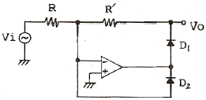
- 반파 정류기
- 전파 정류기
- Log 증폭기
- Anti-log 증폭기
(정답률: 알수없음)

2. 수정진동자의 직렬공지 주파수와 병렬공진 주파수 사이의 임피던스는?
- 유도성
- 유도성+용량성
- 용량성
- 저항성+유도성
(정답률: 알수없음)
3. 드레인 전압이 30V인 접합형 FET에서 게이트 전압을 0.5V 변화시켰더니 드레인 전류가 2mA 변화하였다. 이 FET의 상호컨덕턴스는 몇 m
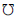
인가?- 0.1
- 1
- 4
- 6
(정답률: 알수없음)
4. 그림과 같은 MOS 게이트의 기능을 나타내는 논리식은? (단, 부논리이다.)
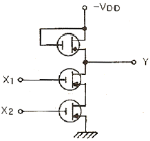
- Y=X1+X2
- Y=X1ㆍX2
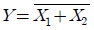
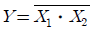
(정답률: 알수없음)
5. 출력 4[V]를 얻는데 궤환이 없을 때는 0.2[V]의 입력이 필요하고, 부궤환이 있을 때는 2[V]의 입력이 필요하다고 한다. 궤환율 β는 얼마인가?
- 0.25
- 0.30
- 0.40
- 0.45
(정답률: 알수없음)
6. 다음의 연산 증폭회로에서 입ㆍ출력 관계가 옳은 것은?
- V0=K(V2-V1)
- V0=KV2-(K+1)V1
- V0=(K+1)V2-KV1
- V0=(K+1)(V2-V1)
(정답률: 알수없음)
7. 다음 논리식을 간략화 하면?
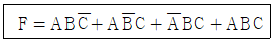
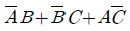
- AB+BC+CA
- AB+CA
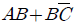
(정답률: 알수없음)
8. 다음 중 집적회로(IC)에서 고주파 특성을 제한하는 주요 요인은?
- 저항
- 다이오드
- 기생 커패시턴스
- 인덕턴스
(정답률: 알수없음)
9. 그림과 같은 ECL 회로의 논리출력은? (단, Y, Y' 는 출력단자)
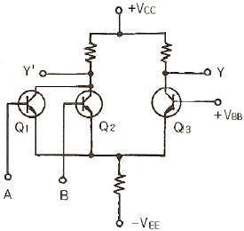
- Y : NAND, Y' : AND
- Y : AND, Y' : NAND
- Y : NOR, Y' : OR
- Y : OR, Y' : NOR
(정답률: 알수없음)
10. 다음과 같은 회로에 구형파 입력 Vi를 인가하였을 때 출력파형으로 가장 적합한 것은?(단, A는 이상적인 연산증폭기)
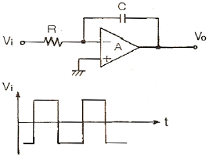
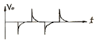
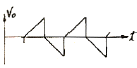
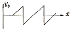
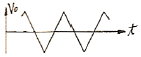
(정답률: 알수없음)
11. 다음 중 푸시풀(push-pull) 증폭기의 설명으로 옳은 것은?
- A급으로 동작을 시키면 크로스 오버(cross over) 왜곡이 증가한다.
- C급으로 동작시키면 출력도 크고 왜곡도 매우 감소한다.
- 짝수 고조파가 소멸되므로 왜곡이 감소한다.
- B급으로 동작시키면 C급보다 효율이 크다.
(정답률: 알수없음)
12. 다음 중 FM파의 복조용 회로로 적합하지 않은 것은?
- 경사형 검파기
- 포락선 검파기
- PLL 검파기
- 직교 검파기
(정답률: 알수없음)
13. FET와 TR의 차이점으로 틀린 것은?
- FET는 TR보다 입력저항이 크다.
- FET는 단극성 소자이고 TR은 쌍극성 소자이다.
- FET는 TR보다 잡음이 작다.
- FET는 전류소자이고 TR은 전압소자이다.
(정답률: 알수없음)
14. 주파수 변조방식의 설명으로 가장 거리가 먼 것은?
- 중간 주파수 증폭단의 이득을 작게 해야 한다.
- 점유 주파수 대역폭이 진폭변조보다 크다.
- 주파수 편이를 크게 하면 점유 주파수 대역폭이 커진다.
- FM 방식이 AM 방식에 비하여 잡음이 비교적 적다.
(정답률: 알수없음)
15. 구형파 펄스에서 펄스폭이 10[μs], 펄스 반복주파수가 1[kHz]일 때, 그 평균 전력이 20[W]이었다면 이 펄스의 첨두전력은 얼마인가?
- 1[kW]
- 2[kW]
- 3[kW]
- 4[kW]
(정답률: 알수없음)
16. ECL(Emitter Coupled Logic) 회로를 TTL 회로와 비교 설명한 것으로 가장 적합한 것은?
- 이미터 플로어이므로 안정된 동작을 한다.
- 스위칭 속도가 빠르다.
- 전력소모가 매우 적다.
- 단일전원 방식으로 공급전압이 높아야 한다.
(정답률: 알수없음)
17. CR 발진기의 설명으로 가장 적합한 것은?
- 부성저항을 이용한 발진기이다.
- 압전기 효과를 이용한 발진기이다.
- R, L 및 C의 부궤환에 의하여 발진한다.
- C와 R의 정궤환에 의하여 발진한다.
(정답률: 알수없음)
18. 다음 중 아날로그-디지털 변환에 가장 유효하게 사용되는 코드는?
- BCD 코드
- 3초과 코드
- 그레이 코드
- 해밍 코드
(정답률: 알수없음)
19. 다음 그림의 카운터는?
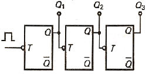
- 동기식 10진 카운터
- 비동기식 8진 카운터
- 동기식 5진 카운터
- 비동기식 3진 카운터
(정답률: 알수없음)
20. 논리회로를 구성하고자 할 때 IC에 내장되어 있는 AND, OR, NAND, NOR, NOT 등의 논리소자 중에서 선택적으로 퓨즈를 절단하는 방법으로 사용자가 직접 기록할 수 있는 PAL 또는 PLA와 같은 IC는 다음 중 어디에 속하는가?
- PLC
- PLD
- PLL
- RAM
(정답률: 알수없음)
2과목: 무선통신 기기
21. AM 무선전화 송신기의 변조도를 80%로 했을 때 종단 전력 증폭기의 컬렉터 손실이 600W, 컬렉터 효율이 70%였다면 무변조시 반송파 출력은 약 몇 W 인가? (단, 변조파는 단일 정형파로 출력회로의 손실은 무시함)
- 649
- 857
- 1000
- 1061
(정답률: 알수없음)
22. 무선 송신기에 사용되는 완충 증폭기에 대한 설명으로 적합하지 않은 것은?
- 완충 증폭기의 바이어스는 주로 A급 또는 AB급이다.
- 광대역의 주파수 대역폭이 요구된다.
- 발진기의 안정도를 높이기 위하여 사용된다.
- 발진회로와 부하간을 격리하기 위하여 사용되는 증폭기이다.
(정답률: 알수없음)
23. FM에서 최대주파수편이 △f=15kHz, 변조주파수 fP= 3000Hz 일 때 변조지수 mf는 얼마인가?
- 1
- 2
- 3
- 5
(정답률: 알수없음)
24. PLL(Phase locked loop) 회로 구성과 가장 관계 깊은 회로는?
- VCO 회로
- Sampling 회로
- 적분 회로
- 주파수 체배회로
(정답률: 알수없음)
25. 다음 중 주파수변조(FM) 수신기를 구성하는 장치(회로)가 아닌 것은?
- 프리엠퍼시스 회로
- 진폭제한기
- 비검파기
- 주파수 변환회로
(정답률: 알수없음)
26. 다음 중 고조파 발사를 억제하는 방법으로 적합하지 않은 것은?
- 송신기와 급전선 사이에 LPF를 삽입한다.
- 전력증폭기 출력 결합회로의 Q를 크게 한다.
- 전력증폭기의 유통각을 작게 한다.
- 우수차 고조파를 작게 하기 위하여 푸시풀 증폭기를 사용한다.
(정답률: 알수없음)
27. 전계강도의 측정원리는 다음 중 어느 법에 속하는가?
- 강도법
- 표준법
- 브리지법
- 비교법
(정답률: 알수없음)
28. AM 수신기에서 수신입력전압(전계강도)이 작을 때에는 동작하지 않고 수신입력전압이 어떤 값 이상 되면 동작하는 회로는?
- AGC
- AFC
- DAGC
- limiter
(정답률: 알수없음)
29. FM 통신방식에 대한 설명 중 옳지 않은 것은?
- 주파수 대역폭이 AM 방식보다 넓다.
- 수신기 입력전압이 한계레벨 보다 작은 경우에는 AM 방식이 오히려 잡음이 적다.
- 진폭 제한기에 의해 진폭성분의 잡음을 감소시킬 수 있다.
- 통신하는 동일 주파수와 동일 수준의 전력 레벨에 의한 혼신을 받을 경우에도 양호한 통신이 가능하다.
(정답률: 알수없음)
30. 수신기의 종합특성 중 희망신호 이외의 신호를 어느 정도 분리할 수 있는냐의 분리능력을 나타내는 것은?
- 감도(Sensitivity)
- 선택도(Selectivity)
- 충실도(Fidelity)
- 안정도(Stability)
(정답률: 알수없음)
31. 다음은 점유주파수 대역폭에 대한 설명이다. ( )안에 들어갈 내용으로 가장 적합한 것은?
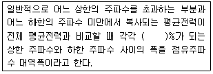
- 0.1
- 0.5
- 1
- 5
(정답률: 알수없음)
32. TV 방송국의 영상송신기 출력이 10 kW, 급전선 손실이 0.6dB, 슈퍼-턴 스타일 공중선 이득이 8.6dB인 경우 실효 복사전력(ERP)은 약 몇 kW 인가?
- 10
- 24
- 48
- 63
(정답률: 알수없음)
33. AM 송신기의 변조특성 측정 방법이 아닌 것은?
- 변조 포락선에 의한 방법
- 직선검파기에 의한 방법
- 타원 도형에 의한 방법
- 전구의 조도에 의한 방법
(정답률: 알수없음)
34. GPS에 대한 설명 중 적합하지 않은 것은?
- 위성은 고도 20200km 상공에서 12시간의 주기로 지구 주위를 돈다.
- 영역은 우주부문, 관제부문, 사용자부문 등으로 구분된다.
- 6개의 궤도면에 모두 20개의 위성으로 구성된다.
- 수신기의 위치와 속도, 시간을 계산하는데 4개 이상 위성의 동시 관측을 필요로 한다.
(정답률: 알수없음)
35. FM 수신기의 스켈치(Squelch) 회로에 대한 설명 중 맞지 않는 것은?
- 잡음 증폭과 잡음 정류 기능을 갖추고 있다.
- 수신기 감도 및 이득을 향상시켜 준다.
- 잡음이 커지면 자동적으로 가청 주파수 증폭기 기능을 정지한다.
- 수신 신호가 약하거나 없을 때, 잡음 출력이 커질 때 이를 방지한다.
(정답률: 알수없음)
36. 다음 중 정류회로의 구성으로 가장 적합한 것은?
- 증폭부 - 평활회로 - 정류부 - 정전압회로 - 부하
- 정류부 - 변압기 - 증폭부 - 정전압회로 - 부하
- 변압기 - 정류부 - 평활회로 - 정전압회로 - 부하
- 변압기 - 증폭부 - 정전압회로 - 평활회로 - 부하
(정답률: 알수없음)
37. 전원장치의 초크 입력형과 비교한 콘덴서 입력형 평활 회로의 특성으로 적합하지 않은 것은?
- 가격이 싼 편이다.
- 첨두 역전압이 상당히 높다.
- 전압 변동율이 좋다.
- 첨두 정류전류가 매우 크다.
(정답률: 알수없음)
38. 다음 중 전원용 축전지에 있어서 과충전(Over charge)을 요하는 경우에 해당되지 않은 것은?
- 방전 후 곧 충전하는 경우
- 정격용량 이상을 방전했을 경우
- 극판에 백색 황산납이 생겼을 경우
- 방전 후 오랫동안 사용하지 않았을 경우
(정답률: 알수없음)
39. 다음 중 슈퍼헤테로다인 수신기에서 고주파 증폭기의 역할이 아닌 것은?
- 수신기의 S/N 비를 개선시킨다.
- 영상주파수 선택도를 개선시킨다.
- 수신기의 이득을 감소시킨다.
- 불요 전파가 수신 안테나를 통해 복사되는 것을 억제한다.
(정답률: 알수없음)
40. 다음 변조방식 중 오류 확률이 가장 낮은 것은?
- 2진 FSK
- 2진 DPSK
- 2진 PSK
- 2진 ASK
(정답률: 알수없음)
3과목: 안테나 공학
41. 임피던스가 50Ω인 급전선의 입력전력 및 반사전력이 각각 50W 및 8W 일 때의 전압 정재파비는 약 얼마인가?
- 6.25
- 2.33
- 0.43
- 0.16
(정답률: 알수없음)
42. 안테나의 급전선(도파관)에 스터브(stub)를 사용하는 이유로 가장 타당한 것은?
- 반사전력을 증폭시키기 위하여
- 안테나의 지향성을 높이기 위하여
- 임피던스를 정합시키기 위하여
- 대역폭을 증가시키기 위하여
(정답률: 알수없음)
43. 반파장 다이폴 안테나의 실효면적은?
- 0.02 λ2
- 0.13 λ2
- 0.44 λ2
- 0.95 λ2
(정답률: 알수없음)
44. 자유공간에 수평으로 놓인 반파 다이폴 안테나의 중앙 급전점의 전류가 10A 이다. 안테나와 직각인 방향으로 10km 떨어진 점의 전계강도는 약 얼마인가?
- 43[mV/m]
- 47[mV/m]
- 60[mV/m]
- 84[mV/m]
(정답률: 알수없음)
45. 미소다이폴 안테나의 복사저항을 계산하는 식은? (단, λ:파장, l:안테나 길이)
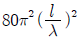
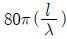
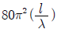
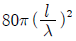
(정답률: 알수없음)
46. 다음 중 건조지, 바위산, 건물의 옥상 등에 사용되는 접지 방식으로 가장 적합한 것은?
- 심굴식접지
- 방사상접지
- 다중접지
- 카운터포이즈
(정답률: 알수없음)
47. 장ㆍ중파용 안테나의 일반적인 특징 중 옳지 않은 것은?
- 설치비가 저렴하고, 광대역성이다.
- 안테나의 이득이 낮다.
- 고유파장의 안테나를 얻기 어렵다.
- 주로 수직편파에 의한 지표파를 이용하므로 접지가 필요하다.
(정답률: 알수없음)
48. Es(산재 E)층에 대한 설명으로 틀린 것은?
- Es층은 항상 존재하며, 계절에 따라 변화가 없다.
- Es층의 출현은 장소에 따라 다르다.
- Es층은 태양의 흑점주기와 별로 관계가 없는 것으로 알려져 있다.
- Es층은 E층과 거의 비슷한 높이에서 생긴다.
(정답률: 알수없음)
49. 대기의 작은 기단군(氣團群), 난류 등에 의한 원인으로 초가시거리 전파에서 가장 심하게 수반하는 페이딩은?
- 감쇠형
- K형
- 신틸레이션형
- 산란파형
(정답률: 알수없음)
50. 라디오 덕트(radio duct)에 대한 설명으로 가장 적합한 것은?
- 라디오 덕트 발생원인 중 하나는 주간 냉각에 의한 라디오 덕트이다.
- 대양성 덕트는 육상의 건조한 대기가 해상으로 흘러들어가면서 일어난다.
- 라디오 덕트 내에서는 도파관과 같이 차단주파수 이상의 전파만 통과시킨다.
- 침강에 의한 덕트는 표준형 덕트를 발생시킨다.
(정답률: 알수없음)
51. SHF대의 전파방식과 관계 적은 것은?
- 직접파
- 라디오 덕트
- 대류권 산란파
- 전리층(F2층) 반사파
(정답률: 알수없음)
52. 정관 안테나에서 정관(top loading)의 역할에 해당되지 않는 것은?
- 실효 길이를 증가시킨다.
- 대지와의 정전용량을 증가시킨다.
- 고유주파수를 증가시킨다.
- 고각도 복사를 억제시킨다.
(정답률: 알수없음)
53. 파장에 따라 크기를 달리하고 단파대에서 마이크로파대까지 사용할 수 있는 광대역 안테나는?
- 대수주기형 안테나
- 빔 안테나
- 롬빅 안테나
- 어골형 안테나
(정답률: 알수없음)
54. 다음 중 집파다이폴(collector)을 여러 개 설치하여 전파를 모으고 그 기전력을 급전선에 결합시키는 원리를 사용한 단파대의 수신용 안테나는?
- 어골형 안테나
- 롬빅(rhombic) 안테나
- 슬리브(sleev) 안테나
- 벤트(bent) 안테나
(정답률: 알수없음)
55. 매질의 비유전율이 9이고, 비투자율이 1일 때 전파속도는 얼마인가?
 [m/sec]
[m/sec] [m/sec]
[m/sec]- 1×108[m/sec]
- 3×108[m/sec]
(정답률: 알수없음)
56. TE10 mode인 구형 도파관의 특성임피던스는 약 몇 Ω 인가? (단, 주파수는 10GHZ, 긴 변의 길이는 3cm 이다.)
- 377
- 435
- 502
- 626
(정답률: 알수없음)
57. 급전선이 갖추어야 할 필요조건이 아닌 것은?
- 외부로 전파 복사가 잘 되어야 한다.
- 유도 방해를 주거나 받지 않아야 한다.
- 전송 효율이 좋아야 한다.
- 임피던스 정합이 용이해야 한다.
(정답률: 알수없음)
58. 다음 안테나 중 방향탐지기와 관련이 없는 것은?
- Loop 다이폴 안테나
- Adcock 안테나
- Bellini-Tosi 안테나
- Wave 안테나
(정답률: 알수없음)
59. 슈퍼 턴스타일(Super Turnstile) 안테나에 대하여 잘못 설명한 것은?
- 수평면내 지향성을 세밀하게 조정하기 쉽다.
- 최대 이득을 얻을 수 있는 적립(stack) 간격이 있다.
- 광대역성으로 만들기 위하여 batwing 안테나를 사용한다.
- 2개의 소자 안테나는 90도 위상차를 두어 급전한다.
(정답률: 알수없음)
60. 델린저 현상의 전반적인 특징으로 옳은 것은?
- 15일 주기로 발생하고 전자밀도가 증가한다.
- 저위도보다 고위도 지방이 심하다.
- 소실현상이라고 한다.
- 지속 시간은 2일에서 5일간 계속된다.
(정답률: 알수없음)
4과목: 무선통신 시스템
61. 마이크로웨이브 통신에서 잡음 방해의 개선방법으로 적합하지 않은 것은?
- 인공잡음의 발생원에 필터 등을 삽입한다.
- 수신기에는 잡음 억제회로를 설치한다.
- 수신기의 실효 대역폭을 넓게 한다.
- 안테나의 지향성을 예민하게 한다.
(정답률: 알수없음)
62. 다음 중 무선랜에서 일반적으로 사용되는 MAC 프로토콜로서 네트워크의 사용 여부를 검사하여 비어 있을 경우에 자신의 데이터를 전송하는 것은?
- CSMA/CD
- DHCP
- CAMA/CA
- ICMP
(정답률: 알수없음)
63. 전리층의 높이를 측정할 때 주로 사용되는 파형은?
- 정현파
- 3각파
- 구형파
- 펄스파
(정답률: 알수없음)
64. 프로파일 차트(profile chart) 작성시에 적용하는 등가지구 반경계수(K)는 우리나라의 지리적 여건을 감안할 경우 얼마가 적당한가?
- K=0
- K=1
- K=1/2
- K=4/3
(정답률: 알수없음)
65. 다음 중 아날로그(analog) 전송 방식에서 가장 중요한 제한 조건은?
- 펄스폭과 대역폭
- 신호율과 오차확률
- 변조율과 진폭크기
- 대역폭과 신호대 잡음비
(정답률: 알수없음)
66. 다음 수신시스템의 총잡음지수(F)를 구하는 공식은? (단, FA : 안테나의 잡음지수, F1 : 전치증폭기 잡음지수, F2 : 후치증폭기 잡음지수, G1 : 전치증폭기 이득, G2 : 후치증폭기 이득)
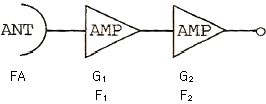
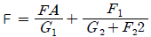
- F=FA+F1+G2-(G1+G2)
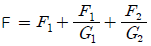
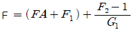
(정답률: 알수없음)
67. M/W 무선중계방식에서 폭우(Rain fall)의 영향이 가장 두드러지게 나타나는 주파수대는?
- 2GHz 대
- 6GHz 대
- 8GHz 대
- 11GHz 대
(정답률: 알수없음)
68. 통신위성의 통신계 기기에 해당하지 않는 것은?
- 저잡음 수신기
- 전력 증폭기
- 주파수 변환기
- 위상 변조기
(정답률: 알수없음)
69. 셀룰러의 최대 셀 반경을 결정하는 요인이 아닌 것은?
- 송신기의 출력
- 수신기의 감도
- 지역적인 환경
- 안테나의 이득과 높이
(정답률: 알수없음)
70. 무선통신 시스템의 운용 중에서 발생하는 현상 중 통신에 방해가 되는 효과(현상)와 이를 제거하기 위한 기술이 잘못 연결된 것은?
- Fading - Space Diversity
- Gaussian Noise - Equalizer
- Echo -Canceller
- Doppler - AFC(자동 주파수 조절) 회로
(정답률: 알수없음)
71. 아날로그 통신방식과 비교한 디지털 통신방식의 특징에 대한 설명으로 적합하지 않은 것은?
- 통신비화가 용이하다.
- 다른 채널로부터의 간섭 현상이 적다.
- 종합통신망의 구축이 어렵다.
- 전송선로에서 발생하는 잡음의 영향을 덜 받는다.
(정답률: 알수없음)
72. 위성지구국에 사용되는 전력증폭기 설계시 고려해야 할 중요변수가 아닌 것은?
- 이득
- 안정도
- 빔폭
- 최대 출력전력
(정답률: 알수없음)
73. CDMA 대역확산 통신기술을 이용하여 다중경로전파 가운데 원하는 신호만을 분리할 수 있는 수신기는?
- Muti channel 수신기
- VLR 수신기
- 헤테로다인 수신기
- 레이크 수신기
(정답률: 알수없음)
74. 위성 통신회선 다원접속 방식 중에서 정확한 빔 지향성이 가장 요구되는 방식은?
- FDMA
- TDMA
- CDMA
- SDMA
(정답률: 알수없음)
75. 무선통신 시스템의 설계에서 가장 어려운 것은?
- 잡음의 제거
- 신호왜곡의 제거
- 간섭의 방지
- 혼변조의 제거
(정답률: 알수없음)
76. 저전력 근거리 무선통신 방식 중에서 초 광대역 전파(GHz 대)를 이용하여 10m의 거리에서 수 100Mbps를 전송하는 방식은?
- ZigBee
- W-LAN
- Bluetooth
- UWB
(정답률: 알수없음)
77. 이동통신에서 브랜치 구성법을 이용하여 수신된 복수 개의 출력 신호를 합성하는 방법이 아닌 것은?
- 선택 합성법
- 등이득 합성법
- 최대비 합성법
- 실효치 합성법
(정답률: 알수없음)
78. 상온(17℃) 1MHz의 대역폭에서 1MΩ 저항에 의해 생겨나는 잡음전압은 약 몇 μV 인가? (단, 볼쯔만 상수 k는 1.38×10-23이다.)
- 75
- 100
- 130
- 200
(정답률: 알수없음)
79. 위성통신시스템을 설계하는데 고려하여야 할 사항이 아닌것은?
- 위성월식 상황을 고려하여야 한다.
- 먼 거리이므로 전송지연을 고려하여야 한다.
- 잡음 및 간섭상태를 고려하여야 한다.
- 전파의 손실상태를 고려하여야 한다.
(정답률: 알수없음)
80. 위성통신시스템의 구성 중 지구국 장비에 해당하지 않는 것은?
- 변복조기
- 저잡음 증폭기
- 주파수 변환기
- 페이로드 시스템
(정답률: 알수없음)
5과목: 전자계산기 일반 및 무선설비기준
81. 다음 중 메모리 셀의 주소에 의해서가 아니라 기억된 내용에 의해서 액세스(access)하는 기억장치는?
- 캐시메모리(cache memory)
- 연관메모리(associative memory)
- 세그멘트메모리(segment memory)
- 가상메모리(virtual memory)
(정답률: 알수없음)
82. 채널(channel)은 어느 곳에 위치해 있는가?
- 연산장치와 레지스터 중간
- 주기억장치와 보조기억장치의 양쪽
- 주기억장치와 중앙처리장치의 중간
- 주기억장치와 입ㆍ출력장치의 사이
(정답률: 알수없음)
83. 컴퓨터의 중앙처리장치내의 제어장치를 구성하는 요소가 아닌 것은?
- 제어 신호 발생기
- 명령 레지스터
- 명령 계수기
- 누산기
(정답률: 알수없음)
84. 다음 중 집적회로와 가장 관계가 깊은 것은?
- 외부와의 연결회로가 복잡하고 비경제적이다.
- 제작한 시스템의 크기가 작아진다.
- 수명이 짧고, 고장률이 높아 신뢰성이 낮다.
- 동작 속도는 빠르지만 전력 소비가 많다.
(정답률: 알수없음)
85. 다음 중 종류가 다른 연산은?
- AND
- ADD
- OR
- NOT
(정답률: 알수없음)
86. 다음 중 10진수 0.834를 8진수로 변환한 결과와 가장 가까운 것은?
- (0.653)8
- (0.764)8
- (0.631)8
- (0.521)8
(정답률: 알수없음)
87. 다음 중 주소지정방식에 대한 설명으로 틀린 것은?
- 직접주소지정방식에서 오퍼랜드는 실제 주소 값이다.
- 간접주소지정방식은 최소 두 번 메모리에 접속해야 실제 데이터를 가져온다.
- 즉시주소지정방식에서 오퍼랜드는 실제 데이터 값이다.
- 레지스터주소지정방식은 프로그램카운터(PC)와 관련이 있다.
(정답률: 알수없음)
88. CPU 레지스터, 캐시기억장치, 주기억장치, 보조기억장치로 기억장치의 계층구조 요소를 구성하고 있다. 이들 중에서 처리속도가 가장 빠른 것과 느린 것을 순서대로 옳게 나열한 것은?
- 캐시기억장치, 주기억장치
- CPU 레지스터, 캐시기억장치
- 주기억장치, 보조기억장치
- CPU 레지스터, 보조기억장치
(정답률: 알수없음)
89. 수의 자료 표현에서 정수와 실수의 표현 중 바르게 짝지어진 것은?
- 정수의 표현 - 부동 소수점 형식
- 실수의 표현 - Zone Decimal 형식
- 정수의 표현 - 1의 보수 방식
- 실수의 표현 - 부호와 절대치 방식
(정답률: 알수없음)
90. 자바(java) 언어의 특징으로 옳지 않은 것은?
- 객체지향언어의 장점을 가지고 있다.
- 컴파일러 언어이다.
- 분산환경에 알맞은 네트워크 언어이다.
- 플랫폼에 무관한 이식이 가능한 언어이다.
(정답률: 알수없음)
91. 비상위치지시용 무선표지설비의 공중선전력 허용편차는?
- 상한 5%, 하한 10%
- 상한 10%, 하한 20%
- 상한 50%, 하한 20%
- 상한 50%, 하한 50%
(정답률: 알수없음)
92. 전력선통신설비 및 유도식통신설비에서 발사되는 주파수의 허용 편차는 몇 퍼센트인가?
- 0.01
- 0.⑤
- 0.1
- 0.5
(정답률: 알수없음)
93. 주파수할당에 관한 용어의 정의로 가장 적합한 것은?
- 특정한 주파수를 이용할 수 있는 권리를 특정인에게 부여하는 것을 말한다.
- 무선국을 허가함에 있어 당해 무선국이 이용할 특정한 주파수를 지정하는 것을 말한다.
- 무선국을 운용할 때 불요파 발사를 억제하기 위한 주파수를 지정하는 것을 말한다.
- 설치된 무선설비가 반응할 수 있도록 필요한 주파수를 지정하는 것을 말한다.
(정답률: 알수없음)
94. 수신설비가 충족하여야 하는 조건으로 적합하지 않은 것은?
- 선택도가 클 것
- 내부 잡음이 적을 것
- 감도는 낮은 신호입력에서도 양호할 것
- 외부의 기계적 잡음 등의 방해를 받지 아니 할 것
(정답률: 알수없음)
95. 다음 중 형식검정을 받아야 하는 무선설비의 기기는?
- 라디오부이의 기기
- 주파수공용무선전화장치
- 개인휴대통신용 무선설비의 기기
- 선박에 설치하는 경보자동수신기
(정답률: 알수없음)
96. 송신설비의 공중선ㆍ급전선 등 고압전기를 통하는 장치는 통상 사람이 보행하는 평면으로부터 몇 미터 이상의 높이에 설치되어야 하는가?
- 2
- 2.5
- 3
- 3.5
(정답률: 알수없음)
97. 인증의 모두가 면제되는 정보통신기기가 아닌 것은?
- 시험연구를 위하여 수입하는 정보통신기기
- 외국으로부터 도입하는 항공기에 설치된 정보통신기기
- 전시회, 경기대회 등 행사에서 판매를 하기 위한 정보통신기기
- 국내에서 판매하지 아니하고 수출전용으로 제조하는 정보통신기기
(정답률: 알수없음)
98. 3MHz 내지 30MHz의 주파수대역 중 방송용으로 분배된 주파수의 전파를 이용하여 음성ㆍ음향 등을 보내는 방송은?
- 데이터방송
- 중파방송
- 단파방송
- 초단파방송
(정답률: 알수없음)
99. 공중선계가 갖추어야 할 조건으로 적합하지 않은 것은?
- 공중선은 이득이 높을 것
- 최고주파수에서 안정적으로 동작할 것
- 정합은 신호의 반사손실이 최소화되도록 할 것
- 지향성은 복사되는 전력이 목표하는 방향을 벗어나지 아니하도록 안정적일 것
(정답률: 알수없음)
100. 아마추어국의 개설조건 중 무선설비의 공중선전력은 몇 와트 이하이어야 하는가?
- 50
- 100
- 200
- 500
(정답률: 알수없음)